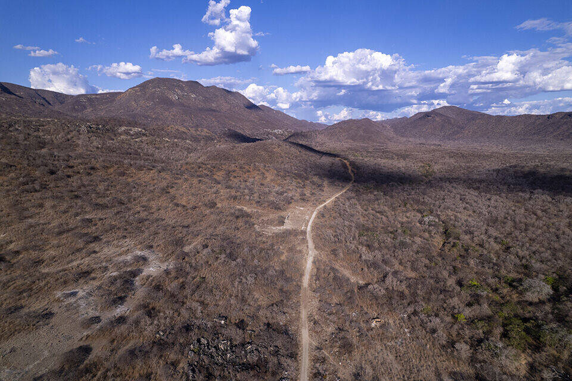
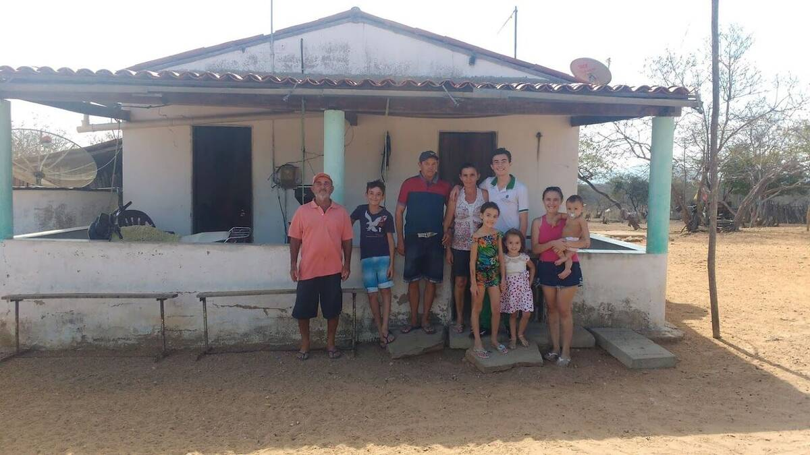
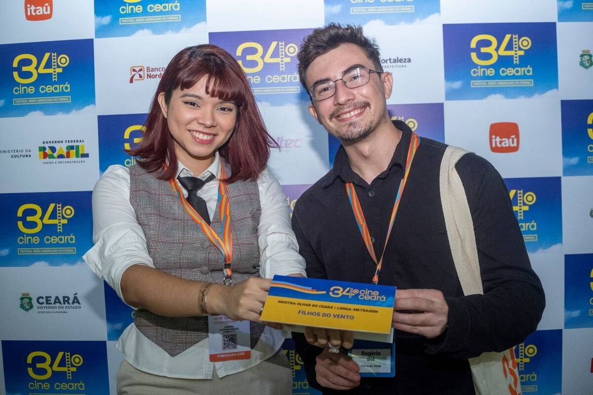
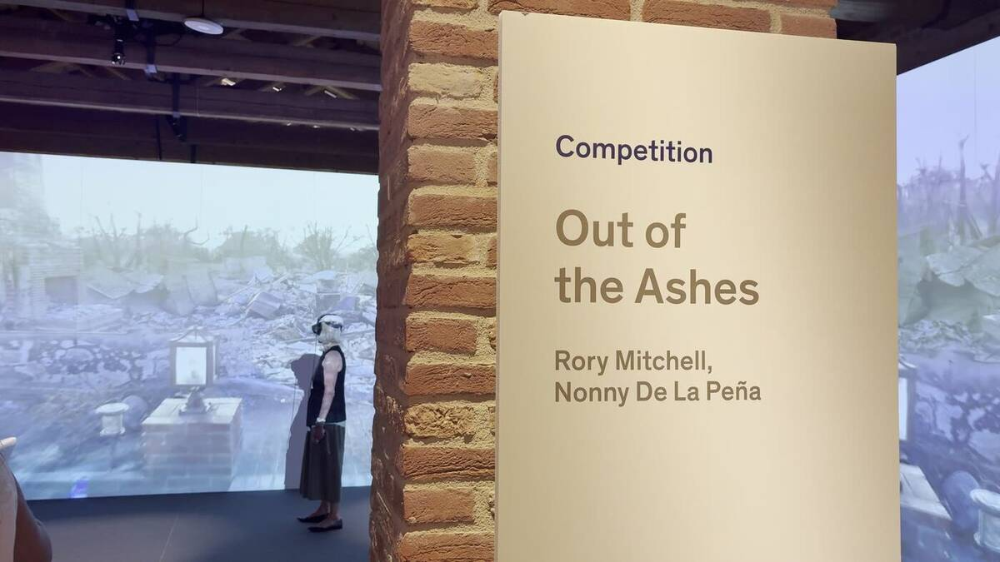
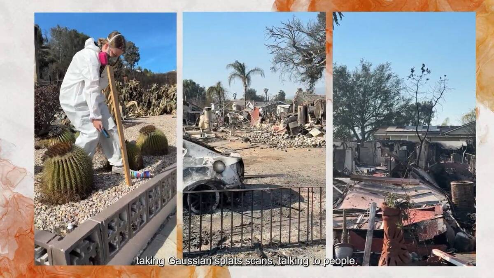
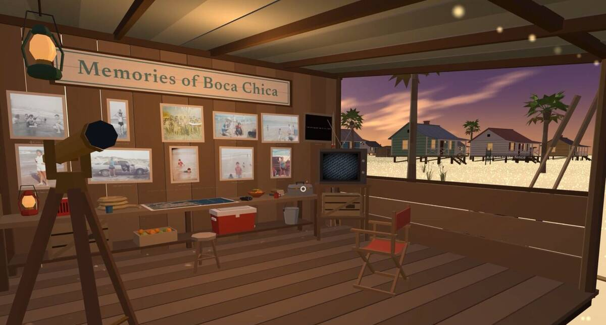
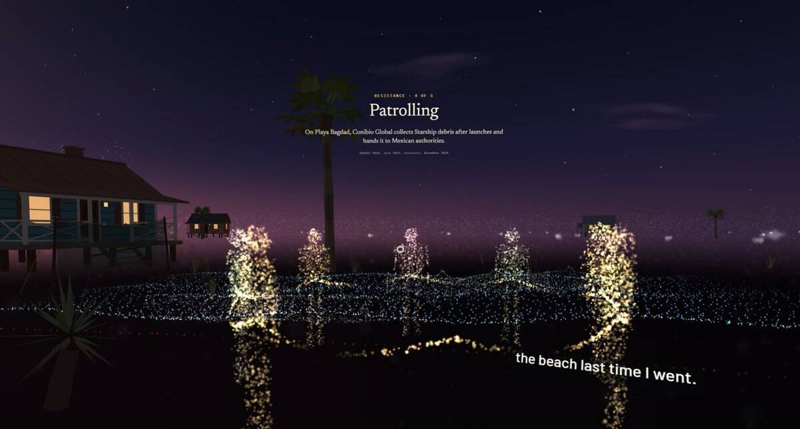

USC Annenberg · Week 14 · guest lecture
What's nextvisual
VR, AR, 360°, drones, GoPro, volumetric capture and Gaussian splats. And the question under all of them: who gets to hold the camera?
Phones out · right now Scan this. Fly around a black hole. Tilt your phone to steer.rogeriobie2016-ship-it.github.io/quasar-lab-site/flight.html
Hi, I'm Rogério
From a farm inXR
1 Grew up in rural Santa Quitéria, Brazil: third of six kids of farmers, first in my family to go to college.
2 B.A. in Journalism (Federal University of Ceará). Ran communication for 350,000+ public school students and a 50-teen youth newsroom at the G20.
3 Now: M.A. Narrative & Emerging Media at ASU, with Prof. Nonny de la Peña. VR, volumetric capture, Gaussian splats.
"What separates me from many young people in my community isn't capability. It's access."

Santa Quitéria, Ceará 
Home 
Cine Ceará 2024
Dynamic 01 · guess the term
What do you think it is?
Shout your guess first. Then we flip.
Augmented reality
Digital layers on top of your real space, through a phone or glasses. The story lands on your table.
Try web AR ↗
Virtual reality
A headset replaces your world. With 6DoF you can walk inside the scene. Best for: embodiment.
Nonny de la Peña ↗
Aerial reporting
The view that shows scale : a flood, a fire line, a launch site. In the US you need an FAA Part 107 license to fly for work.
FAA Part 107 ↗ 05
GoPro / POV guess → flip
Point of view
A small camera on a body, a bike, a boat. The audience rides with the source, not watching them.
My vertical work ↗ 06
Volumetric capture guess → flip
A person in 3D
Dozens of cameras record a person as a 3D video. You can walk around them while they talk.
Out of the Ashes ↗ 07
Gaussian splat guess → flip
A place from photos
Millions of soft 3D "blobs" rebuilt from photos or video. A phone can make one in minutes.
Scaniverse (free) ↗
The goal
The feeling that you are really there. The superpower of immersive media, and its biggest ethical risk.
IDA on VR docs ↗
From wonder to storytelling · a short history
The tech changes.The story is what moves us.
1838
Stereoscope · Charles Wheatstone Two images, one per eye. The brain builds the depth. Every VR headset still works this way. View-Master (1939) put it in kids' hands.
Stereoscope 1896
Arrival of a Train · Lumière The legend says the audience ran from the screen. Historians found no record of it. Why do we keep telling that story?
The film and the myth 2012
Snow Fall · The New York Times John Branch's avalanche story made the web scroll like a film. 2013 Pulitzer Prize, Feature Writing.
Snow Fall 2012
Hunger in Los Angeles Nonny de la Peña recreates a food-bank line in VR. Premieres at Sundance. A field is born.
Nonny de la Peña 2015
The Displaced · Clouds Over Sidra NYT ships 1M+ Google Cardboards to subscribers. The UN puts viewers inside a Syrian refugee camp.
The Displaced 2017 · 21
Sam Wolson We Who Remain (Nuba Mountains, Sudan) and Reeducated (The New Yorker, Xinjiang). SXSW Special Jury Recognition, 2021.
We Who Remain Reeducated 2026
Out of the Ashes · and now Rory Mitchell & Nonny de la Peña: Special Jury Prize, Venice Immersive. Today: smart glasses, splats on your phone.
Venice awards
Every new medium arrived wrapped in fear and wonder. What lasts is a good story. And notice Reeducated: no camera inside the camps, so they rebuilt it from testimony, and said so.
The toolbox · format follows the question
Every format answersjournalistic question.
Case 01 · Out of the Ashes · Rory Mitchell & Nonny de la Peña
The LA fires,3D.
Fire-scarred homes in photogrammetry, survivors in volumetric capture. I worked on the capture and was the project's official content creator, from LA to the Venice Biennale.
Special Jury Prize
Venice Immersive 2026
300+
visitors I guided at the Music Center, Jan 2026
Venice 
Competition 
Capture Volumetric rig
Case 02 · my capstone · The Sound of a Sacrifice Zone
Arrive as an intruder. ally.
A room-scale VR documentary about Boca Chica, Texas and Playa Bagdad, Mexico, where SpaceX's Starship program meets a border community and a fragile coastline. Co-created with local voices.
The portal
A real fence "SPACEX PRIVATE PROPERTY. DO NOT ENTER." In the piece, the fence is the door between chapters.
The mechanic
The Embodied Edit The rocket's roar swallows the community's voices. If you choose to pay attention, you hear them again.
The method
Social cartography The official closure perimeter erases the community's map. Their voices draw it back.


Real projects · one minute each
Don't just watch it. Feel it.
2015 · UN · 360° VR
Clouds Over Sidra Gabo Arora, Chris Milk, Barry Pousman (Vrse)
A day with Sidra, a girl in a Syrian refugee camp. The UN used its VR films to raise money.
UN data: viewers donated at 1 in 6, up from 1 in 12
Fortune 2016 · VR · sound
Notes on Blindness Colinart, La Burthe, Middleton, Spinney (ARTE, Ex Nihilo)
Built from John Hull's audio diaries as he lost his sight. You learn to really listen.
Tribeca Storyscapes Award 2016
Notes on Blindness 2015 · NYT VR
The Displaced Imraan Ismail & Ben Solomon, for The New York Times
The Times' first VR film: lives uprooted by war. Shipped with 1M+ Cardboards.
Entertainment Lions Grand Prix, Cannes Lions 2016
The Displaced 2012 · VR · Sundance
Hunger in Los Angeles Nonny de la Peña, with USC's Mixed Reality Lab
A real event: a man collapses in a food-bank line. You stand there as a witness. Made right here, at USC.
Premiered at Sundance 2012
Nonny de la Peña 2017 · brand · AR
IKEA Place IKEA · AR app on your phone
See how the furniture looks in your own room before you buy it. Advertising learned this before newsrooms did.
D&AD Wood Pencil 2018, Digital Design
D&AD
USC Annenberg · Content Creators Academy 2026
Journalists arecreators.
Immersive pieces live at festivals. Your audience lives on a phone. The future needs both. What I learned this summer, from people in this building:
1 Write the headline first Then build the piece from it. (Thank you, Eric.)
2 Engage, then explain Hook in the first second, verbally and on screen. Deliver the promise right away.
3 Always check your audio Mic to the speaker, human or not. Bad audio kills good images.
4 Find your niche, then a series Mine: immersive media helping communities rebuild after climate disasters.
The real question · designing for the pluriverse
The future isn't a device.who holds it.
1989, Altamira, Brazil. Journalists came to film "the Indians" protesting a dam. The Kayapó were already filming them . The dam was stopped (for decades).
REC
lens held by: outsiders
👀
The community is the object of the frame. Never the author.
🎥
The community holds the lens. The story changes hands.
tap to flip who holds the camera
Arturo Escobar
Design designs back What we design ends up designing us. Autonomous design: communities designing their own worlds.
Designs for the Pluriverse Kayapó · Video nas Aldeias
The camera, flipped Indigenous filmmakers using the colonizer's storytelling machine on their own terms.
Video nas Aldeias Malcolm Gladwell
The Tipping Point A few connectors, one sticky image, the right moment. That's how a small world tips a big one.
The Tipping Point
Ethics · vote with your hands
Real, reconstructed,not yours?
A survivor recorded in a volumetric studio, telling her own story.
Real Reconstructed Not yours
Real, but staged. It's her voice and her body, in a studio, not her home. Tell the audience where and how it was captured.
A 3D scene generated from ONE family photo from the 1970s.
Real Reconstructed Not yours
Reconstructed. The AI invented everything the photo didn't show. Label it as a reconstruction, every time.
Rocket audio from a TV broadcast, in your public VR piece.
Real Reconstructed Not yours
Real, and not yours. No license, no public release. My own prototype uses one, and it stays out of every public version.
An AI voice of a community member reading their own testimony.
Real Reconstructed Not yours
Synthetic. Only with explicit consent, and disclosed on screen. Otherwise it's a deepfake, even with good intentions.
Tap each card to reveal. Presence makes people believe. That's exactly why we owe them the label.
Dynamic 02 · remix your final project
Pick one moment.immersive.
In your group, take ONE moment from your final video and redesign it with one tool from today.
1
The format 360, drone, AR, VR, volumetric or splat. Which question does it answer for your story?
2
The feeling What will the audience feel that a flat video can't give them?
3
The camera Who holds it? What must you disclose: real, reconstructed or not yours?
Quick quiz · 4 teams, 20 seconds each
Start timer Reveal Next question →
Your way in · festivals, conferences, grants
You don't need permissionstart.
Free tracker XR, games & funding calls 2026-27. Make a copy.
Deadlines from my tracker as of Nov 12, 2026. Always confirm on the official page before you apply.
Thank you · let's keep in touch
Hold thecamera.
The next big story in visual journalism might come from a place nobody is filming yet. Maybe yours.
Rogério Bié Portfolio, every link from today, and how to reach me.rogeriobie2016@gmail.com
Rogério Bié · Los Angeles
Hands-on · optional
Don't watch it. Walk into it.
Gaussian splat · journalism
Out of the Ashes A place from the LA fires. Pinch, drag, walk around it.
open
WebXR · splats + 360°
Pages of Prophecy A family's exile story, co-built with director Noelle Muluneh.
open WebXR · explainer
Quasar Flight Science explained by flying it. Tilt your phone, it follows your gyro.
open


 open
open open
open